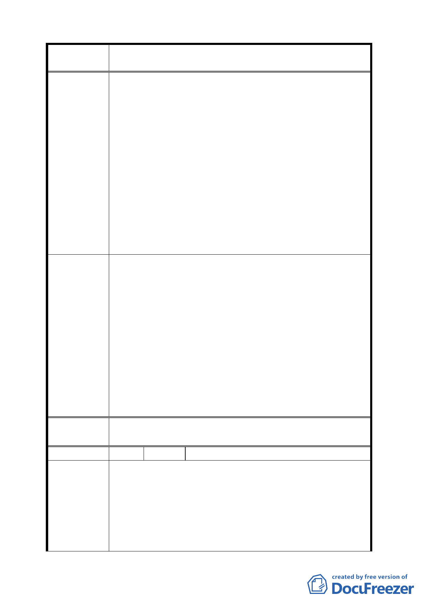

案
名
擬定臺北市中正區齊東街保存區及日式宿舍風貌保
存特定專用區細部計畫案
一、 重新釐定細部計畫案，對於涉及侵犯居民權益或模糊
不清之政令，應有明確交代。
二、 指派較高層級之官員，重新舉辦說明會，不要只派科
長級官員出面搪塞，以釋狐疑。
三、 請於細部計畫書內說明清楚，是要保存何文化？是中
華民國文化？還是台灣文化？還是….？
建議辦法
四、 請按里長之建議案，保留一戶古蹟、保存一戶歷史建
物，拆除其餘未保留戶之可用材料，作為保留戶修建
所需材料之用途。
五、 （一）請提列市府 1200 萬元之預算所要花費細目為
何？（二）請保證不用徵附近居民之受益費，並賠償
因列為保存區，致附近房地不再上漲或可能下跌所造
成損失。（三）請提出所有權人台灣銀行等機構之經
費支應同意書。
一、本案計畫範圍週邊地區，都市計畫並未調整，且本計
畫案實施後，將可提升地區環境品質。
二、對於計畫內容如有疑問，可直接詢問市府都市發展局
或文化局協助說明。
專案小組
審 查 結 論 三、另為整體維護本地區之文化資產，同意市府所劃定之
範圍，對本地區歷史建築使用構想，請更多元、廣度
經營。
四、短期間請文化局商請環保局協助處理地方髒亂與蚊蟲
滋生的問題，期能回應地方民意要求。
委 員會決 議 依專案小組審查結論辦理。
編 號 2 陳情人 中華民國專業者都市改革組織
一、 齊東街是一條具有 260 年歷史的東西向街道，自艋
舺、經城內、越東門、至荊子埒（齊東街一帶古地名），
歪歪斜斜地指向朱厝崙、中崙、錫口（松山），是聯
陳情理由
絡艋舺與錫口兩大港口，是運送米糧至河港的米道，
如同萬華龍山寺地區的剝皮寮與青草港，均可在古地
圖中找到過往歷史的痕跡，是台北歷經錯誤的開發與
失敗的都市規劃後，少數跨越清朝、日殖民、中華民
6